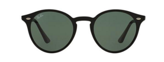

The ankle dress...
A new trend that occurred this year, that is looking to roll over to 2016, are the long ankle dress. Similar to oversized tshirts, boyfriend jeans and loose fitting cardigans, the ankle length dressed is designed to be oversized coverage look while giving a hint of femine touch as the dress contours the body. I can see this trend to continue for the next couple of years. You can find this dress at Zara. If you are not picky with brands, I would recommend checking out stores such as Forever21 for similar styles.

The work dress...
This is the perfect business attire that shows off your femine side while giving you the sophisticated edgy look. Not to mention, the neutral color gray has been very popular this fall and winter. Similar to the dress above, you can also find this at your nearest Zara. Again, if you are not picky with brand, H&M is a good alternative for business attire.
50 shades of manicure...
Many of you are wondering what's the "new" color coming this new year. In my opinion, this baby purple color has been a big hit over the summer. Lately, I've been noticing a lot of bright, soft, and baby like colors. I personally was stunting this color in Vegas. Side note, but I realized that men like women in light/neutrals. I remember asking an ex of mine, which color nail he'd prefer, and he would always choose the lighter, less dramatic look. So just a hint for you ladies who are trying to flirt with your man, men like light, bright, girly colors. Then again, it depends on your man. If your man doesn't like dramatic make up, I would go with this color.

Classic Bar...
THE CLASSIC BAR! Althought I've noticed this necklace since 2012, this has finally hit mainstream. Like your classic hoop earrings, you can pair this was almost everything! Not sure what the quality of this is like at your regular retailers, but I purchased mine through ETSY, and the color has not fade one bit. I believe mine was 14 karat plated gold... for only $24 bucks. Unless I'm wearing a huge statement necklace, I wear this almost everyday. It doesn't even rust in the shower! I highly recommend checking out ETSY.

Framed Sunglasses...
I am in love with this style sunglass! Similar to the John Lenon type sunglasses, or also known as the 70's wire frame, this design helps frame the face while giving you the oversized look. You'll catch Kaitlyn Bristowe, from The Bachelorette stunting these guys. You can find these at your nearest Sunglass Hut for about $150 a pair. If you don't want to spend $150 on a pair of sunglasses, I've also seen Forever 21 carry these. I do have to admit, that these will stay in style for the next 3-4 years, so it might be worth investing in a nice pair. Can't go wrong with a pair of Ray Bans!
Fresh tunes...
Me, Myself & I by G-Easy x Bebe Rexha
Catchy, edgy and dancy hit. With a blend of G-Easy's hiphop with BeBe's electronic voice this hit gives this song a nice edge. Fun song to pre-funk too! Enjoy!